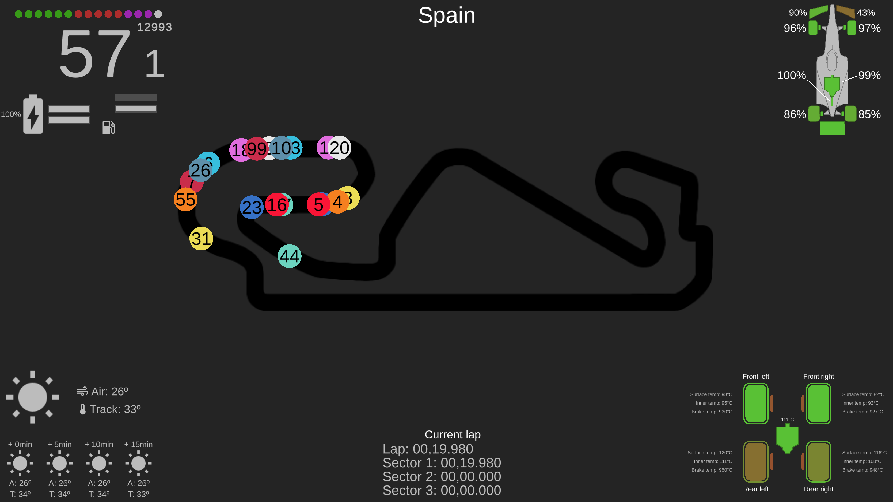
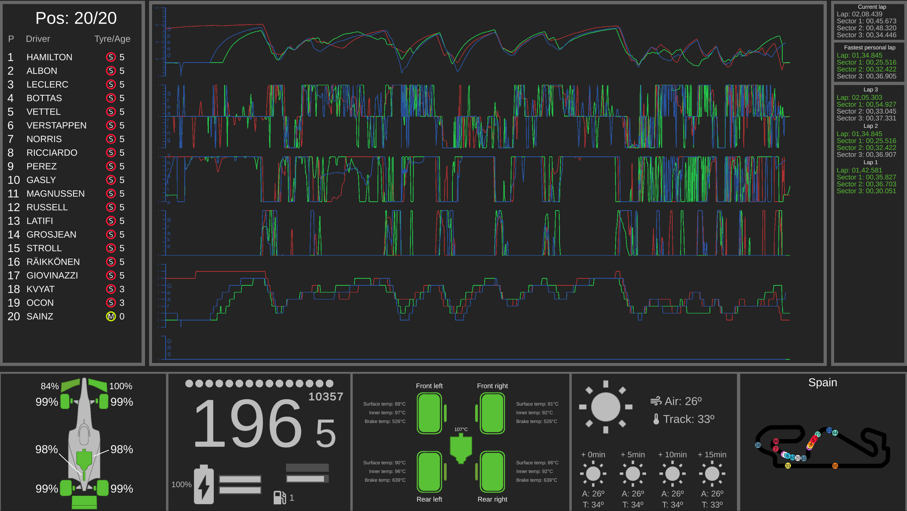

F1 Telemetry System & Library
F1 Telemtry Library is a custom library I made in C++ that reads and stores all telemetry data available from the official F1 2020 game made by Codemasters. This library is quite simple as the only things you can do once you initialize everything is access raw data from the game. As this is not verry useful for the average user, I decided to make what I call F1 Telemetry System (F1TS). F1TS is a low resource open source visual tool that allows users to visualize their data in real time while they play.
F1TS currentlly has two modes implemented of the three planed. This project is still in progress even though it's for the 2020 game.
 The visual app is made using Unity and C++. For the graphs I have developed a custom graph system using UI meshes provided by Unity. The project started just for fun with the library to see what data I could extract. After that, I decided to see if someone could actually use that data by making a visual app that continued to grow and grow to a point that even if it has bugs, it could actually be useful for a average user.
The code for both the Library and the System is public on my Github. Library GitHub. System GitHub